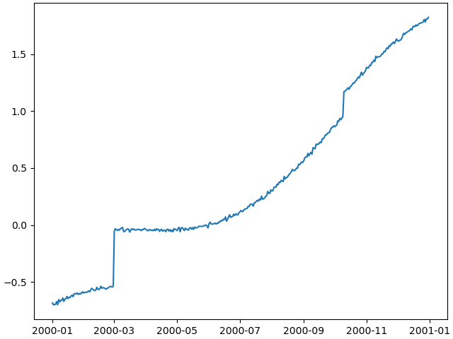
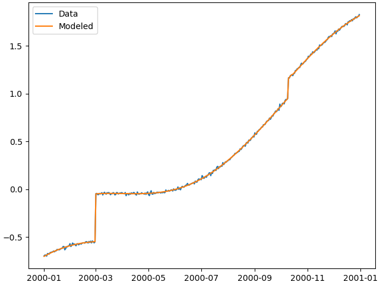

Tutorial 1: The first synthetic station
This tutorial will give the very first insight into the basic workings of DISSTANS.
We will have a look at the Timeseries,
Model, and Station objects,
and show how standard Python, NumPy and Matplotlib procedures can be used directly
with DISSTANS.
Table of contents
Building a Model collection
Let’s create an empty synthetic station “TUT” located in Los Angeles using
Station:
>>> from disstans import Station
>>> synth_stat = Station(name="TUT", location=(34.05, -118.25, 93))
Now, let’s create a dictionary of Model objects which we would
like to use to create our synthetic timeseries. We’ll start with a linear trend, an annual
sinusoid and some steps.
>>> import numpy as np
>>> from disstans.models import Polynomial, Sinusoid, Step
>>> mdl_secular = Polynomial(order=1, time_unit="D", t_reference="2000-01-01")
>>> mdl_secular.read_parameters(np.array([-1, 5e-3]))
>>> mdl_annual = Sinusoid(period=365.25, time_unit="D", t_reference="2000-01-01")
>>> mdl_annual.read_parameters(np.array([0.3, 0]))
>>> mdl_steps = Step(steptimes=["2000-03-01", "2000-10-10", "2000-10-15"])
>>> mdl_steps.read_parameters(np.array([0.5, 0.2, -0.01]))
Let’s combine the models in a dictionary for easy access later.
>>> collection = {"Secular": mdl_secular,
... "Annual": mdl_annual,
... "Steps": mdl_steps}
Next, we need the time span to evaluate our models over. We can use Pandas’
date_range() for this very nicely.
>>> import pandas as pd
>>> timevector = pd.date_range(start="2000-01-01", end="2000-12-31", freq="1D")
Now, we can evaluate the models, and sum them all up. evaluate()
returns a dictionary and the modeled output can be found in the 'fit' key:
>>> sum_models = np.zeros((timevector.size, 1))
>>> for model_description, model in collection.items():
... evaluated = model.evaluate(timevector)
... sum_models += evaluated["fit"]
Creating Timeseries objects
A Timeseries can now be created using the data we just
made up, and we can add it to our station:
>>> from disstans import Timeseries
>>> synth_ts = Timeseries.from_array(timevector=timevector,
... data=sum_models,
... src="synthetic",
... data_unit="m",
... data_cols=["total"])
>>> synth_stat["Data"] = synth_ts
Note
synth_stat["Data"] = synth_ts is equivalent to
synth_stat.add_timeseries("Data", synth_ts).
The data_unit, data_cols and timeseries name are obviously a bit arbitrary
for synthetic data.
But oh no - we forgot to add noise! We can either
go back to the beginning, change the
sum_modelsNumPy array, recreatesynth_ts, and then replace the the timeseries saved in the station (replacing is just adding a new timeseries with an existing name),add the noise to the timeseries directly and replace the timeseries saved in the station, or
just overwrite the timeseries’ data.
They are all equivalent, but because the first doesn’t show any new code, and the second
is literally just doing synth_ts = synth_ts + noise (where noise is a NumPy array
of the same shape as the timeseries), we’re going to use the third way for the sake of
the tutorial:
>>> np.random.seed(1) # make this example reproducible
>>> noise = np.random.randn(*synth_stat["Data"].shape)*0.01
>>> synth_stat["Data"].data += noise
Finally, let’s have a look at the timeseries we created. DISSTANS provides a straightforward interface to plot timeseries with Matplotlib:
>>> import matplotlib.pyplot as plt
>>> plt.plot(synth_stat["Data"].data)
>>> plt.savefig("tutorial_1a.png")
>>> plt.close()
This should give us an output like this:
Fitting the models
We’ve successfully created a synthetic timeseries for a single station. Now, let’s see if a linear regression solver can estimate the model parameters we originally put in. To this end, we must first associate our models with the timeseries at the station.
>>> for model_description, model in collection.items():
... synth_stat.add_local_model("Data", model_description, model)
Under the hood, adding individual models will create a
ModelCollection object at the station, which keeps track
of all the different models. This collection object is necessary because once
we solve for the model parameters, there will be covariances between the different
models which are important to track for the uncertainty estimation.
The model collection object is accessed as synth_stat.models["Data"].
For the fitting, we first import a solver function from the solvers
module, and then call it to give us a Solution object of
the fitted parameters.
We will start with basic, linear, non-regularized least-squares, which returns
a Solution object:
>>> from disstans.solvers import linear_regression
>>> result = linear_regression(ts=synth_stat["Data"],
... models=synth_stat.models["Data"])
With the solver finished, we want to do multiple things for all models:
Give the models their best-fit parameters as returned by the solver using the
read_parameters()method.Calculate the trajectory of each individual model given the best-fit parameters using the
evaluate()method.Calculate the combined trajectory of all models together (i.e., the best fit to the timeseries) using the
evaluate()method. (One could also combine the timeseries produces in point 2 and sum them, but this will not work if we want to estimate the predicted fit covariance.)Add the evaluated trajectories to the station as a “fit” using the
add_fit()method.
We can do this in the following way:
>>> # quick access to the model collection
>>> stat_coll = synth_stat.models["Data"]
>>> # give the model collection the best-fit parameters and covariances
>>> stat_coll.read_parameters(result.parameters, result.covariances)
>>> # evaluate each individual model and add as a fit
>>> for model_description in stat_coll.model_names:
... modeled = stat_coll[model_description].evaluate(timevector)
... fit_ts = synth_stat.add_fit(ts_description="Data",
... fit=modeled,
... model_description=model_description)
>>> # evaluate the entire model collection at once
>>> modeled = stat_coll.evaluate(timevector)
>>> fit_ts = synth_stat.add_fit(ts_description="Data", fit=modeled)
Not providing a model description to add_fit()
implies that this is the fit of all models jointly.
Note
Note that in this process, the model parameters we set in the beginning
to each model object instance (e.g. mdl_secular) will be
overwritten. If we want to keep them, we can either create the models again
without giving them parameters, or create a (deep) copy of the model dictionary.
Lastly, we want to make a timeseries object from the joint model fit for plotting purposes.
We can do that by directly accessing allfits:
>>> synth_stat.add_timeseries(ts_description="Modeled",
... timeseries=synth_stat.fits["Data"].allfits,
... override_src="model", override_data_cols=synth_ts.data_cols)
Note
It should be pointed out here that this is a lot of code that doesn’t need to be
repeated by the user every time, but is intended to illustrate what is happening
under the hood. For ease of use, the Network class
can do all of these things with its two methods fit()
and evaluate().
Plotting the fit and residuals
At this point, we first want to have a look at the fit to see if everything worked
before actually looking at the parameters themselves or residuals. The evaluate
function already created a new timeseries object on the way, which we can now plot:
>>> plt.plot(synth_stat["Data"].data, label="Data")
>>> plt.plot(synth_stat["Modeled"].data, label="Modeled")
>>> plt.legend()
>>> plt.savefig("tutorial_1b.png")
>>> plt.close()
As we can see, the model matches the data pretty well:
Lastly, let’s calculate the residual and some statistics on it. Timeseries objects can directly be used in (basic) mathematical operations, with the output being a new Timeseries object that can be added to the station.
>>> synth_stat["Residual"] = synth_stat["Data"] - synth_stat["Modeled"]
>>> stats_dict = synth_stat.analyze_residuals(ts_description="Residual",
... mean=True, std=True, verbose=True)
TUT: Residual Mean Standard Deviation
total-total 4.420482e-14 0.009595
And we can plot it like before:
>>> plt.plot(synth_stat["Residual"].data)
>>> plt.savefig("tutorial_1c.png")
>>> plt.close()
Note
This is very simple plotting. The Network class provides
some better plotting tools to use with larger networks or stations with more
timeseries which we will explore later. This is again just intended to show how
the data is accessible.